Introduction
As you add layers to the map from the Datasets panel, each layer will be added to a list in the Selected Layers panel. This panel is where you can manage layer visibility, ordering, styling, and advanced visualization modes. This guide will provide some basic examples of each, applied to some sample layers.
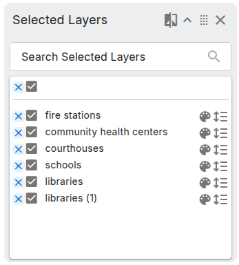
Basic Controls
The main content of the Selected Layers panel is a list of layers that have been selected from the Datasets panel. Each row in the list represents a single copy of a layer. You may add a layer to the map multiple times, and each copy gets its own row in the list. This allows you to compare different styles applied to the same layer. Note how in the screenshot above, the “libraries” layer has been added twice, and the second copy shows “(1)” next to the layer name.
Each row in the list has the following five elements (left to right):
-
A blue “X” button to remove the layer copy from the map and the Selected Layers panel. This will remove the row from the list. To get the layer back, you will need to add it from the Datasets panel again.
-
A checkbox to toggle the visibility of the layer on the map. Unlike the blue “X” button, this will not affect the row in the list; it only affects the map.
-
The name of the layer, along with the copy ID in parenthesis if this is not the first copy of the layer. The copy IDs are zero-indexed, so the first copy to show its ID has an ID of 1.
-
A palette icon to configure the style for that layer copy. This will open the styling menu, which will be explained in the Layer Style Menu section.
-
A reordering icon which communicates that the row can be dragged to reorder the layers on the map. You may grab the icon itself or anywhere else on the row that isn’t a control. Dragging a row to the top of the list will make it appear on the top of the layers on the map.
Above the list of layers, there are a few additional controls that apply to all layers in the list for your convenience. The topmost blue “X” button will remove all rows from the list and remove all layers from the map. The topmost checkbox will toggle the visibility of all layers on the map.
If any of the layers in the list have more than one frame, that row will have an additional frame slider control visible. This control consists of a slider and numeric input with up and down arrows. This enables you to scrub through the frames, increment one frame at a time, or enter a number to go directly to a target frame. The slider values are 1-indexed.
Below the slider, the name of the frame is shown. In this case, the name of the first frame is “Frame: 0”, which is 0-indexed. Next to the name of the frame, a vertical three-dots icon is available to open a dialog with details about the current frame.
You can toggle the visibility of these frame controls with the up/down arrow icon that appears next to the palette icon for multiframe layers.
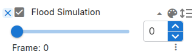
Like the other panels in the interface, the Selected Layers panel has a search box above the main content. Entering any text in the search box will filter the list of layers, showing only layer names that contain the search text.
In the top-right corner of the panel, in addition to the basic panel control icons (see the Panel Controls section for more details on these common icons), the Selected Layers panel also has a split view icon which, when clicked, toggles map comparison mode.
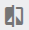
Comparison Mode
When Comparison Mode is enabled, both the map and the Selected Layers panel are affected. The map will be split in two by a draggable divider. The two halves of the map are separate, but they move in sync as you pan and zoom. You can visualize different layers on each half of the map and swipe the divider to compare them.
After clicking the split view icon, it will become blue to signify that Comparison Mode is enabled. It will also gain a subsequent icon below it which denotes the direction of the draggable divider. Hovering over the set of two icons will open a menu that allows you to set the direction of the divider (either horizontal or vertical).
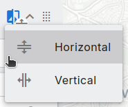
In the screenshot below, a layer depicting a simulated flood is shown on the top map, and a layer depicting the boundary of the river/bay water system is shown on the bottom map. The comparison divider can be moved down to show more of the simulated flood layer and moved up to show more of the water system layer. Underneath, an elevation layer is shown on both maps, unaffected by the comparison divider.
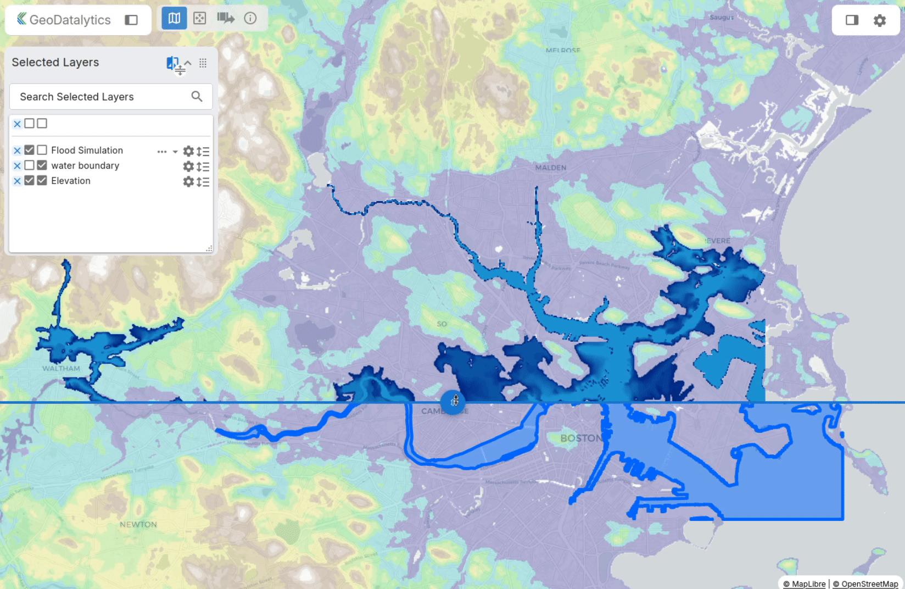
Note that when Comparison Mode is enabled, each row in the Selected Layers panel now has two visibility checkboxes instead of one. Each checkbox controls the visibility of that layer on one side of the comparison map. When the divider is horizontal, the checkboxes control the top and bottom maps respectively. When the divider is vertical, the checkboxes control the left and right maps.
Comparison mode can also be used to compare two different styles on the same layer copy. In the screenshot below, Only one layer copy exists in the Selected Layers panel, and it is marked as visible on both the left and right maps (both visibility checkboxes are checked). However, the left and right maps have different styles applied to the layer.
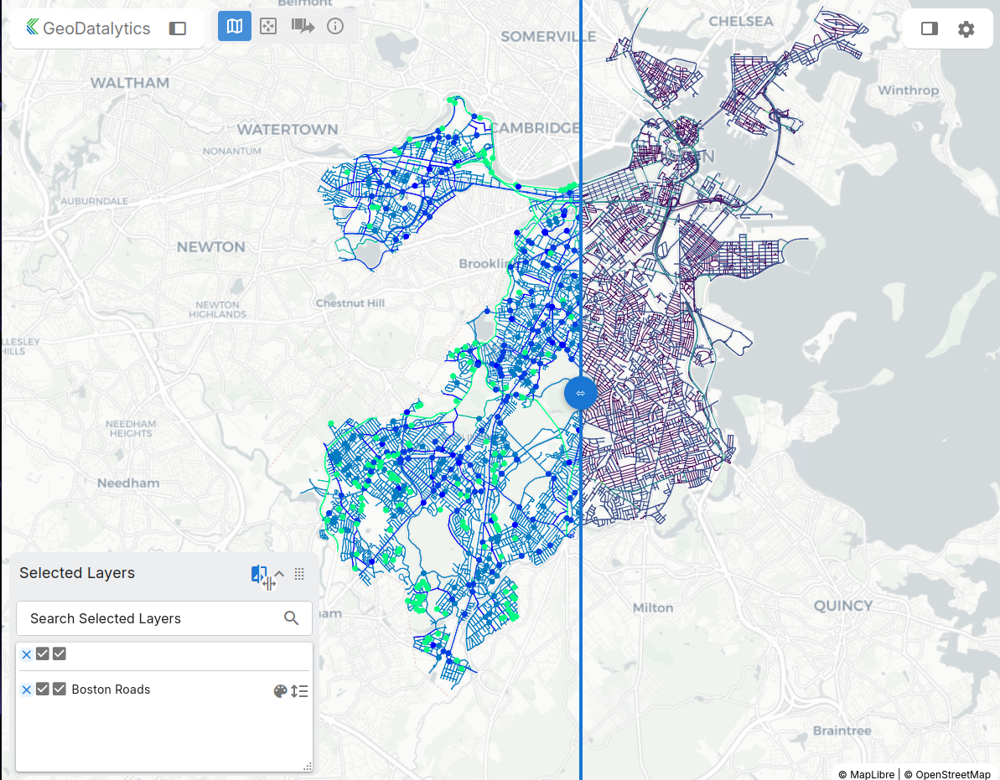
Clicking on the palette icon next to the layer name opens the style configuration menu, which has a simplified interface when Comparison Mode is enabled. This simplified menu allows you to choose the style for each half of the map from a list of existing saved styles. The saved styles can only be created and configured with the full version of the styling menu when Comparison Mode is not enabled (see Layer Style Menu section). You can also adjust the opacity of the layer on each half of the map.
The screenshot below shows this simplified style menu, where we can see that the left map has applied a different style called “highways”, where features are colored according to the “highway” property, which has values like “primary”, “secondary”, or “tertiary” for lines and “crossing”, “traffic_signals”, or “turning_circle” for points. The right map has applied the default style called “lanes”, where features are colored (with a different colormap) according to the “lanes” property , which denotes the number of lanes on a given road segment. The point features on this layer (representing intersections) do not have this property, so they are not visible with this style.
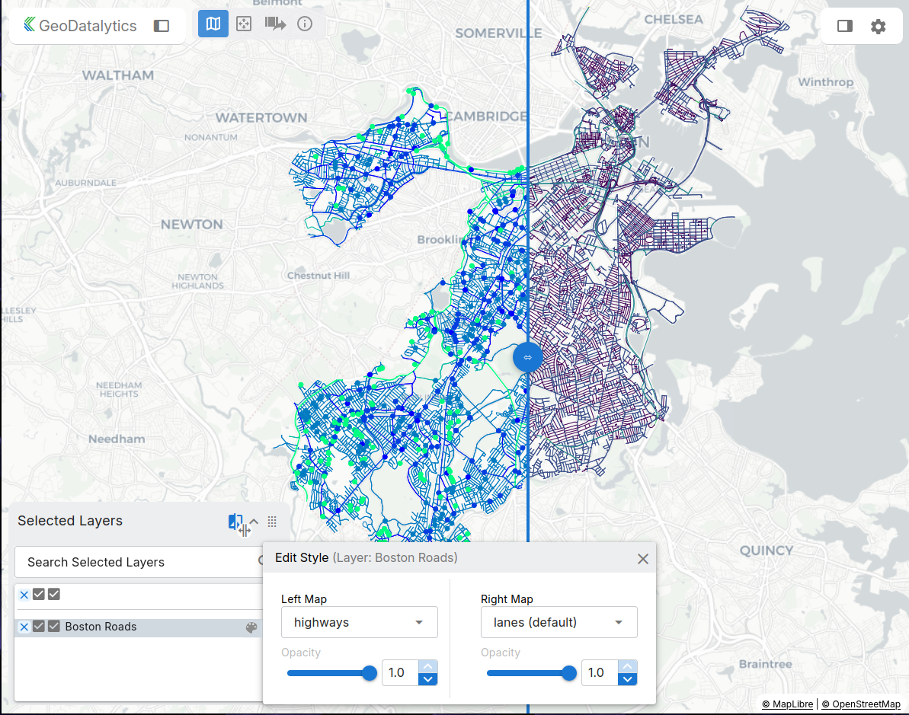
One additional thing to note is that some tools in the Controls Bar are disabled when Comparison Mode is enabled. The screenshot tool and the ability to save a new bookmark are disallowed during comparison due to implementation constraints.
Layer Style Menu
The Layer Style menu can be opened by clicking on the palette icon next to any layer in the Selected Layers panel. This menu allows you to explore different styling options available for the target layer. You may save named styles for quick access, one of which can be set as the default style for that layer.
The primary purpose of the style menu is to grant you the ability to create informative visualizations of your data. In the process of creating an informative visualization, you will need to explore what the data contains and experiment with your options. As you make changes to your style configuration, the layer will update on the map behind the style menu so you can immediately see the results of your changes.
It’s important to note that the styling options available in the menu will differ depending on the content of the layer. The options available for vector data are different from the options available for raster data. While it is possible for a layer to have both vector and raster data, it is an uncommon and advanced use case. This guide will provide instructions for both vector and raster examples separately.
The screenshot below shows the style menu for a raster-only layer, which depicts elevation values across the state of Massachusetts. This layer already has one saved style called “discrete terrain”, and this saved style is the default for this layer. The “discrete terrain” style has an opacity value of 0.3 and applies the “terrain” colormap in a discrete manner. The following sections will discuss each of these options and more.
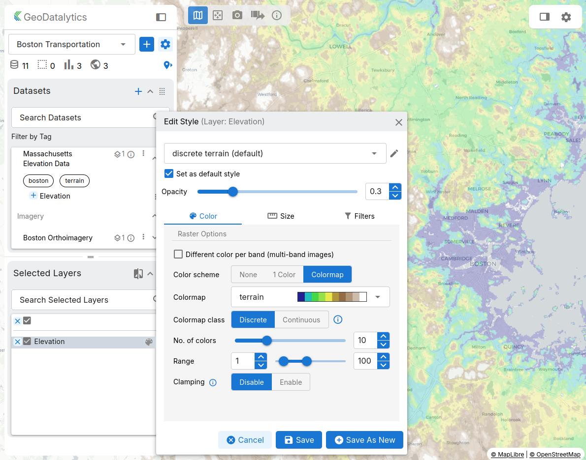
Top Level Controls
The Layer Style menu is organized hierarchically. There are several top-level controls that will be discussed in this section. After the top-level controls, there are three tabs which control specific style attributes that are dependent on the data in the layer: the color, size, and filter tabs (discussed in the following sections) have different content for raster and vector data. But the top-level controls in this section are the same regardless of the data content of the layer.
Note
If you are not logged in, you will not have access to create or update styles, so some of the top-level controls will not be available.
-
The first control is a selection box, which allows you to switch between saved styles. If no saved styles exist for a layer, the selection will appear like this:
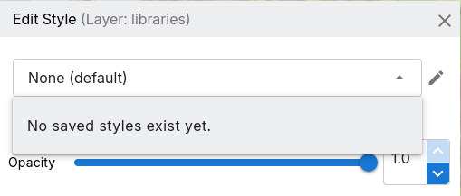
Once you have saved some styles for a layer, the selection options will be populated. There will always be one style marked as the default for a given layer. Selecting a saved style from this list will change the style of the layer on the map and will update the rest of the options in the style menu to reflect the configuration of that saved state so you can make changes if desired.
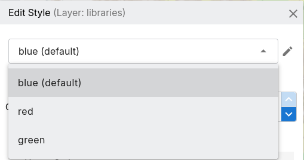
-
Next to the style selection box is a pencil icon. Hovering over this pencil icon will display a menu with two options: rename and delete. When clicked, each option will open a corresponding dialog.
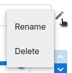
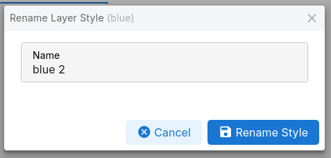
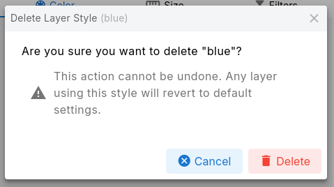
-
Below the style selection box is a checkbox labeled “Set as default style”. This will automatically be checked for the first style you make. There can only ever be one default style for a given layer. Saving any style with this box checked will uncheck the box for all other styles on the layer.
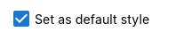
-
If the current layer has more than one frame, then an additional control for “Default Frame” will be visible. This value determines the frame that will be shown by default when the layer is first added to the map. This control consists of a slider and numeric input with up and down arrows.
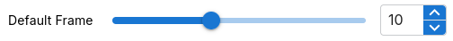
-
Next is the opacity control, which also consists of a slider and numeric input with up and down arrows. The maximum opacity is 1, and the minimum opacity is 0. This control allows increments of 0.1.
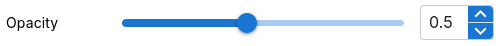
-
After the color, size, and filters tabs (discussed in the following sections), the bottom of the Layer Style menu has three buttons: cancel, save, and save as new.
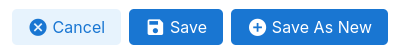
a. The cancel button behaves the same as the “X” button in the top right corner of the menu; both buttons will close the dialog without saving changes to the current style. Even if you have unsaved changes, the state of the layer style will be maintained on the map and in the Layer Style menu the next time you open it. But those unsaved changes will not be maintained if you refresh the page.
b. The save button will save the current configuration to the saved style you have selected at the top of the menu. If no saved styles exist, this button is disabled. You must use the "Save As New" button instead.
c. The "Save As New" button will open a dialog prompting you to enter a name for the new style. After submitting the name, the new style will be created and will appear in the style selection box at the top of the menu. This is kept separate from the Save button so that you can make several variations of similar styles without re-entering common configuration values (e.g. you can select Style A, change one thing, and save it as Style B without changing Style A).
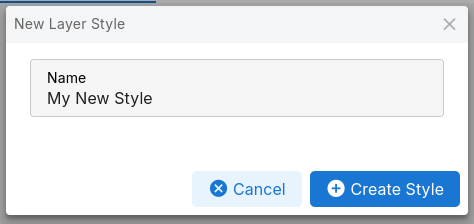
Color Tab
The color tab is the most complex tab with the greatest number of controls and the greatest degree of variation depending on the data content of the layer. This section will explain all of the possible controls that may appear in this tab, but you likely won’t see all of them for a single given layer.
The options in the color tab are arranged hierarchically; only a few controls will be visible at first, but more may appear as you make decisions that prompt further configuration. For example, the screenshot below shows very little content in the color tab, prompting you for only a few decisions. These controls are shown for a vector-only layer that only has one type of feature (points only).
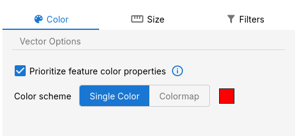
The only controls visible are a checkbox to enable/disable prioritization of feature color properties (the tooltip next to the checkbox explains that “When enabled, features with fill and stroke properties will use those colors. Features without those properties will use the specified color configuration.”) and a color scheme selection. The color scheme selection has “single color” selected by default, so a color swatch next to the control shows the current single color being applied to all features (that do not have fill and stroke properties already). Clicking on the color swatch will open a color picker control so you can change the color.
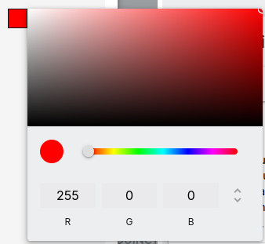
For this simple use case, these controls are all you need, so the color tab does not display any more controls. But if you switch the color scheme control to “colormap”, many more controls become visible.
Colormap Configuration
In the screenshot below, “colormap” has been selected, and the color swatch has disappeared, replaced by a set of more controls. Only the first control in that set is enabled; the others are disabled until the first control has a value. This is because you cannot apply a colormap to vector data until you specify which property to color by.
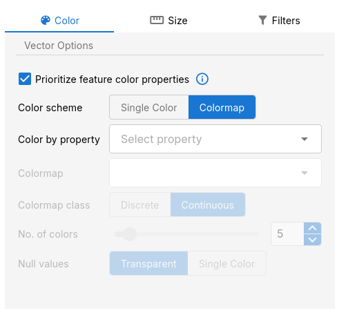
The “Color by property” selection will have options populated according to the properties present on your data. In the screenshot below, these properties exist on points depicting the locations of hospitals in Massachusetts. Properties with string values, like “TOWN”, will display a label with few example values found for that property. Properties with numeric values, like “BEDCOUNT”, will display a label with the range of values that exist for that property.
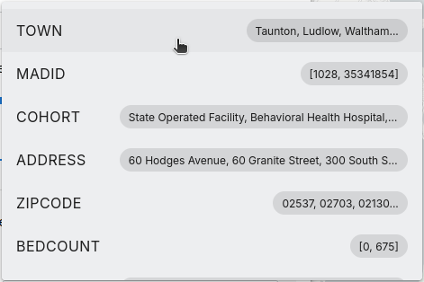
Once you have selected a property to color by, the other controls will become enabled. The next control in the list allows you to select a colormap. There are several built-in colormaps that will suffice to cover most use cases, but there is also an option to create a custom colormap for advanced use cases.
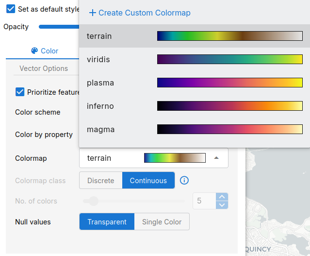
Clicking on the “+ Create New Colormap” option will open a dialog where you can name and configure a new colormap. To configure a colormap, you will need to define a set of markers along a gradient. Each marker has a color and a value between 0 and 1. It’s important to note that every colormap is defined on a scale of 0 to 1, but it can be proportionally applied to any range. It can also be applied to a categorical property (like “TOWN” in the properties example above).
The colormap configuration section is defined by a gradient bar with draggable markers along the bottom, followed by a list of the markers where each marker has a color swatch and a number control. The color swatches, when clicked, will open color picker menus that allow you to change the colors.
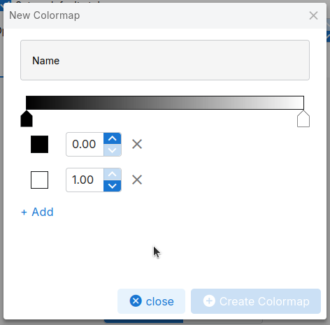
To move the markers, you can either drag them along the bottom of the gradient bar, or you can modify the marker’s value with the number control. The values are synced, so changing one will change the other. To add a new marker, you can either click on any space along the gradient bar (hovering over the gradient bar will show where a marker will be created, as in the screenshot below), or you can use the “+Add” button at the bottom of the marker list.
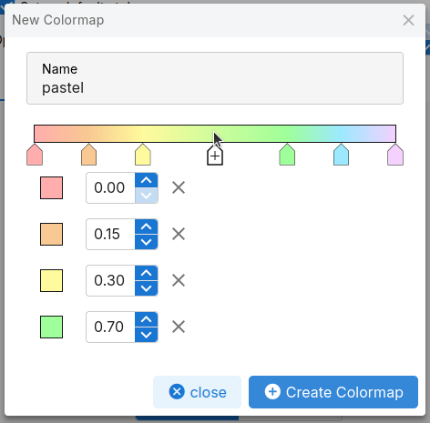
Once you create a custom colormap, it will be added to the colormap selection options and can be reused in other styles and on other layers in the current project (your colormap will not be available in other projects).
After selecting a colormap, the following two controls determine how that colormap should be applied to the data. The colormap class control allows you to toggle between a continuous colormap versus a discrete colormap. The tooltip to the side explains that “A discrete colormap divides data into distinct, non-overlapping color buckets. A continuous colormap maps values along a smooth gradient.”
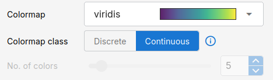
When “continuous” is selected, the colormap is shown as a gradient. The control for the number of colors does not apply, so it is disabled.
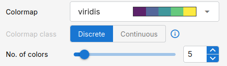
When “discrete” is selected, the colormap is shown with a finite number of distinct colors. The control for the number of colors applies for a discrete colormap, so it is enabled. Changing the value for this control will update the colormap with that number of colors.
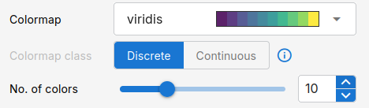
The last control in this set is for null values. This control determines how to render features that are missing a value for the selected property. By default, those features will be transparent (i.e. invisible on the map). Switching this control to “Single Color” will make a color swatch appear. Clicking on the color swatch will open a color picker menu so you can select a color for those features lacking a value for the selected property.
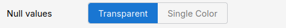
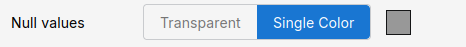
That completes the explanation of the basic color controls, but as stated at the beginning, the options available will change depending on the data in the layer. The rest of this section will explain other variations of the color tab controls.
Multiple Vector Feature Types
If a vector layer has more than one type of feature (points, lines, or polygons), then an additional control will be shown at the top of the color tab. The checkbox labeled “Different color per feature type” is unchecked by default, so the default behavior is that the same color configuration will apply to all features in the layer. But if you check this box, you can specify a different color configuration for each type.
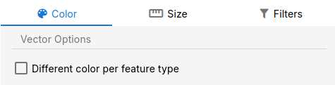
Once the box is checked, an additional control will appear allowing you to select one feature type at a time. All of the usual color controls will now apply to only that selected feature type. You can switch between feature types as many times as you like and they will each maintain their own separate configuration. Next to the feature type selection box, an eye icon will also appear, allowing you to toggle the visibility of the selected feature type.
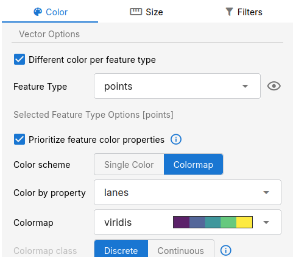
Note that when you check or uncheck the “different color per feature type” box, the current configuration shown will be applied to all feature types. If the box is unchecked, only one color configuration exists; when you check the box, that configuration will be applied to all feature types until you make changes to differentiate the config for each type. If the box is checked, more than one configuration exists; when you uncheck the box, the current configuration shown (regardless of which feature type it is applied to) will become the configuration for all feature types.
Raster Options
When the target layer has raster data, the options vary slightly from the options available for vector data. When styling raster data, only the color tab is applicable; the size and filters tabs are not applicable to raster data.
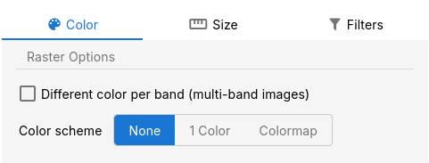
If the raster has multiple bands, the first control available will be similar to the “Different color per feature type” checkbox discussed above for vector data. The “Different color per band” checkbox, when checked, allows you to configure separate color styles for each band in the image. A band selection box will become visible, along with an eye icon to toggle the visibility of each band. When checked, the subsequent color controls will only apply to the selected band.
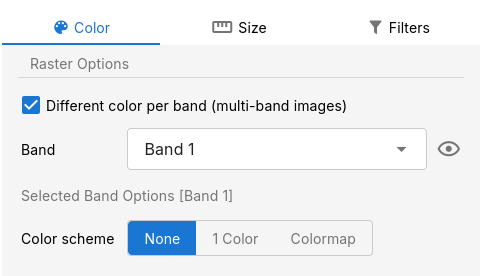
Raster options have a similar “Color scheme” control, but it has one extra option. Rather than only choosing between a single color and a colormap, there is also a “None” option that is selected by default. The “None” color scheme will default to any inherent style present in the raster data. For example, an 3-band RGB raster will default to showing the first band in red, the second band in green, and the third band in blue. A single band raster will appear in grayscale.
The single color mode operates the same way as it does for vector data.
The colormap mode is mostly the same as for vector data, with a few key differences. Firstly, you do not need to select a property to color by; the colormap will be applied to the pixel values in the raster. Secondly, instead of a “Null values” control, there are two new controls: “Range” and “Clamping”.
The range control, characterized by a slider with two handles and two numeric inputs with up and down arrows on either side of the slider, determines the minimum and maximum values to which the color map is applied. In the screenshot below, the target layer is a raster containing values in the range [-35, 270], but the range slider indicates a range of [1, 100]. The selected colormap, “terrain” will be applied to this smaller range, meaning that the first color in the colormap, dark blue, will be assigned to 1, and the last color in the colormap, white, will be assigned to 100. The rest of the colormap in between will be assigned within that range.
The clamping control determines how to render values outside the selected range. The tooltip next to “clamping” explains that “When enabled, values outside the selected range will be clamped to the ends of the colormap. When disabled, those values will appear transparent.” By default, clamping is enabled. In the example below, that would mean that values less than 1 would be colored dark blue and values greater than 100 would be colored white. But the screenshot below shows that clamping is disabled, so those values outside the selected range will be transparent.
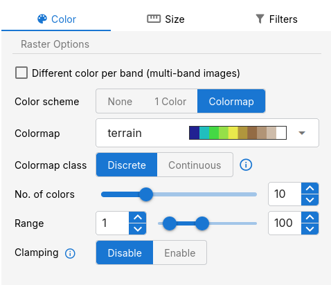
This concludes the explanation of the controls available in the color tab.
Size Tab
When discussing size as it applies to vector features, it is important to note that size refers to the radius of point features, the width of line features, and the width of the outline on polygon features.
As with the color tab, the size tab will have a control that allows you to specify a different size configuration per feature type (if the target layer has more than one feature type). When the “Different size per feature type” checkbox is checked, a “feature type” selection box will appear, and the subsequent size controls will only apply to the selected feature type. Unlike the control in the color tab, though, this selection box does not have an eye icon to toggle the visibility of each feature type.
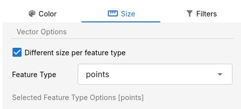
Also similar to the color tab, the size tab is arranged hierarchically, so the visibility of certain controls will be determined by the choices you make for top-level controls, like “Size choice”. You can pick between a single size selection or a range of sizes. The single size mode is selected by default, so the following “size” control offers a slider and numeric input with up and down arrows to specify the size. This control accepts integer values 1-10.
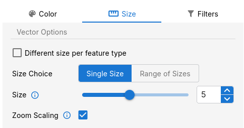
The last control visible for single size mode is the “zoom scaling” checkbox. The tooltip next to this control explains that “Size of features will change according to the current map zoom level, multiplied by a factor of the size value”. When zoom scaling is disabled, features will appear to have the same size on your screen regardless of the map’s zoom level. When it is enabled, features will appear to get bigger as you zoom in.
If you switch to the “Range of Sizes” mode, more controls will become visible. The following control, “size by property” has a selection box of properties present on the data (just as with colormap mode in the color tab). The following controls, “size range” and “null values” are disabled until a property is selected.
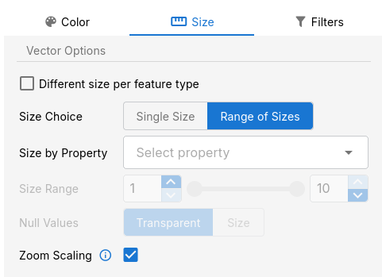
However, unlike the property selection in the color tab, this property selection control will only accept numeric properties as valid selections. In the screenshot below, the property selection options box shows only numeric properties.
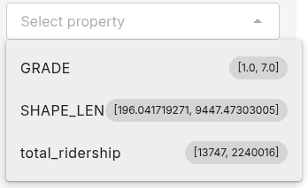
Once you have selected a property to size by, the size range and null values controls become enabled. The size range control, characterized by a slider with two handles and two numeric inputs with up and down arrows on either side of the slider, determines the minimum and maximum sizes to apply to the features. Features with values in between will be sized proportionally in the specified range.
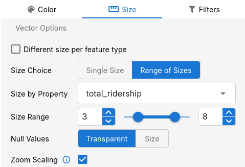
The null values control determines how to render features that do not have a value for the selected property. By default, those features will be transparent (invisible on the map). You can also toggle this control to “size”, which will cause another control to appear with a slider and numeric input with up and down arrows. Features that lack the selected property will be rendered with the size specified by this additional control.
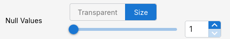
This concludes the explanation of the controls available in the size tab.
Raster Options
The size tab is not applicable to raster data, so the tab will show a brief message instead of a control set when the layer only contains raster data.
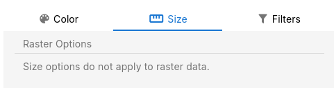
Filters Tab
The filters tab allows you to conditionally render vector features according to the values of certain properties. You can add as many filters as you like to a style, so the main content of the filters tab is a list. When you first visit the filters tab, that list is empty. You can click the “+ Add New Filter” button to begin configuring your first filter.
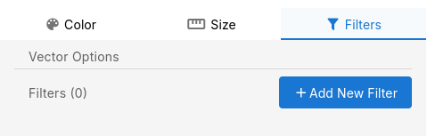
Clicking the button to add a new filter will create a group of controls in the filters list. Each filter in the list will consist of its own group of controls. The group of controls is fairly sparse to begin, but more controls in the group will become visible according to the choices you make. So far, the group of controls for this filter includes a property selection box, an eye icon, a trach can icon, and a “filter mode” toggle control. These top-level controls will be available for every filter you create.
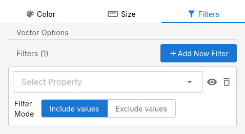
The property selection box determines which property you want to filter by. If you would like to filter by multiple properties, you will need to create multiple filters. The options for this selection box are all the properties present on all vector features. Each property will show a sample label with a few example values for string properties or a range for numeric properties. String properties will have different filter controls than numeric properties.
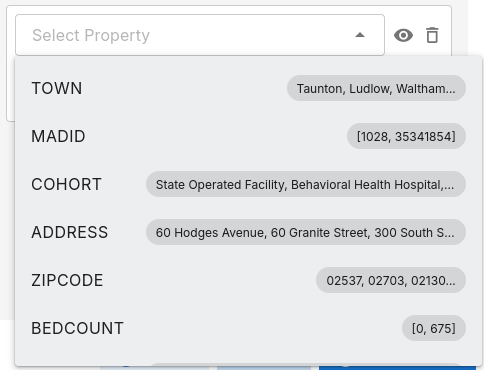
The eye icon toggles whether this filter is being applied. When clicked, the eye icon will show a slash through it and all the other controls in that group (besides the trash can icon) will become disabled. When the filter is disabled like this, it will not be applied to the data on the map. This allows you to test filter behavior by turning the filter on and off without removing the filter from the list entirely.
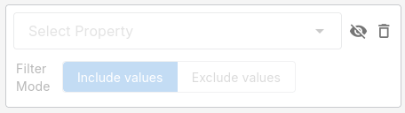
The trash can icon will remove the filter from the list entirely, discarding all unsaved changes.
The “filter mode” toggle has two modes: “include values” and “exclude values”. Every filter you create will have this option; it essentially allows you to invert the behavior of the filter. The other controls in every filter will allow you to specify a set of conditions that a feature must meet to match the filter. By default, only matching features are shown on the map with the “include values” mode. But switching to “exclude values” mode means that matching features will be hidden and all other features will be shown.
Once you select a property to filter by, more controls will become visible in the filter’s control group. If you select a string property (like “TOWN” in the screenshot below), then a “Values” selection box will appear.
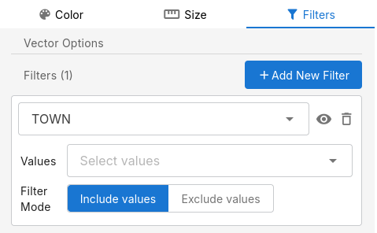
The options in the values selection box will consist of all values found for that property across all features in the layer. Each option will have a checkbox next to it; you can check as many values as you like.
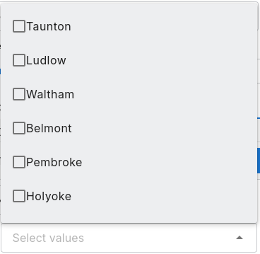
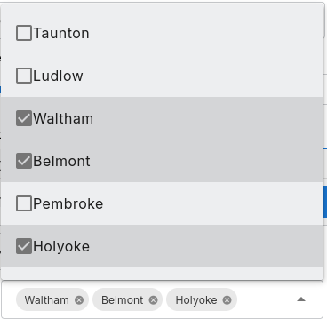
If you select a numeric property (like “BEDCOUNT” in the screenshot below), then two controls will appear: “Value type” and “Values”. The value type control allows you to specify whether you would like to match a single value or a range of values. By default, range mode is selected, so the values control will show a range input, characterized by a slider with two handles and two numeric inputs with up and down arrows on either side of the slider.
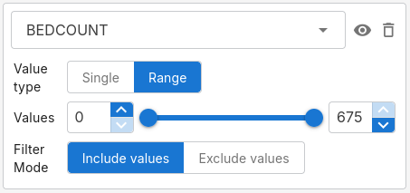
If single mode is selected for value type, then the values control will show a single value slider.
Once you have finished configuring your first filter, you can add more to the list. To keep your filters organized, you can only focus one filter at a time. When a filter is focused, you can see the whole control group and can make adjustments. Other filters that are not focused will appear collapsed with a summary statement to describe the filter.
Collapsed filters still show the eye icon and trash can icon for quick access, as well as one additional pencil icon. The pencil icon shown on a collapsed filter allows you to focus editing on that filter, which will expand the controls for that filter and collapse all other filters.
If the current focused filter is empty (newly created with no configuration specified, as in the screenshot below), then that empty filter will be removed when you switch to focus on a different filter.
Raster Options
The filters tab is not applicable to raster data, so the tab will show a brief message instead of a control set when the layer only contains raster data.